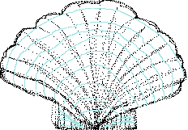

The coach picked us up at Sandbach M6 Services at 08:15, we were thirty-two plus the driver and our leaders, Fr Robert Moore from Leyland and Michael Guest from Sale.
We crossed from Dover to Calais on the Pride of Bruges and, arriving in Calais, we left down the A26/A1 for our night stay at Peronne. The following morning after our breakfast of croissant, roll and coffee we climbed into the bus and shared Morning Prayer on the journey.
Arriving in Paris at Tour Saint Jacques, we donned our pilgrims' shells and walked the first half mile of the Rue Saint Jacques towards Santiago de Compostela nine hundred miles away! Back on the coach and on to Orleans and Tours to visit the Basilica and shrine of St Martin of Tours. In the basilica Fr Robert celebrated the Eucharist behind the
high altar on the tomb of St Martin. Travelling south to Poitiers we came to the Pilgrimage Church of St Hilary the Great, a major opponent of the Arian heresy. St Martin of Tours was a follower of St Hilary. The present church dates from the eleventh century. It is built of a "forest" of columns and features numerous domes and medieval wall paintings.
The following day -- Saturday -- we had a good breakfast and were on the coach by 08:30. We set out for Aulnay south of Poitiers via St Jean d'Angely. Morning Prayer today was shared around the cross in the ancient churchyard (Mass was being celebrated inside the church).
The next stop was at Pons (pronounced Pon) for lunch. Pons has a number of eleventh and twelfth century buildings. While there we visited the Hospital Neuf, an ancient pilgrims' hostel dating from the twelfth century. We then drove past Bordeaux and so on down close to the sea and Cote d'Argent to the Basque country and Bayonne. After a short stop at Combo-les-bains, we arrived at our overnight stop at St Jean Pied de Port (St John at the foot of the pass) only a short distance from Spain. This is a most picturesque area. After the 'endless' plain of northern France we entered the Pyrenees mountains where the houses have large overhanging eaves and almost invariably have cream washed walls with maroon woodwork. Some of the trees on the mountain sides had begun to turn a russet brown which almost matched the woodwork of the houses. The view from our balcony showed houses littered up the hill side opposite. Behind the hill towered the mountains. The next day we were to be in Spain so the language would become more of a problem; fortunately at least one of our number spoke the language.
On Sunday morning we loaded the coach and then set off on a walk through the old part of the town before climbing aboard for Ibaneta.
We stopped at Ibaneta where a monk used to ring a bell to guide pilgrims up the valley through the mist. It was rainy with a biting wind at three thousand feet up so we did not stay outside long! The next stop was at the monastery at Roncevalles -- a pilgrim resting place. We saw the beautiful chapel in the monastery and the small church outside with a (larger) crypt alongside where pilgrims who died during their stop were buried. As our road wound up and over the Pyrenees there were blue signs with a shell, a pilgrim and an arrow showing the more direct route which the pilgrims on foot should take. Travelled via Pamplona to Eunate, another pilgrim resting place with another burial place for pilgrims who did not make it beyond there. Pamplona was built by Pompei to keep the Basques in order! It grew in importance with the growth of pilgrim traffic. At Pamplona the descent of the road became much gentler without
the winding, hairpinned steepness we had experienced during the ascent. The town itself seems to be in a basin surrounded by mountains. Pamplona, an important industrial centre, is famous for the running of the bulls which starts at the seventh hour on the seventh day of the seventh month and lasts for seven days. At Eunate is the octagonal twelfth century Knight Templar Church of Santa Maria where Fr Alex, a priest in our party, celebrated the Eucharist according to the liturgy of the Church in Scotland. The church was one of a number with thin, translucent alabaster sheets in the place of glass in the windows. Close to here is the point where the four routes out of France converge to form substantially one Camino for the rest of the journey (there are several routes between San Juan de Ortega and Burgos).
In a few minutes we came to our hotel -- Hotel Jakue, Puente la Reina (Hotel James, Queen's Bridge) -- for the night. Opposite was a statue of St James the Pilgrim.
In the late afternoon most of us walked through the old town calling in at the Church of the Sacred Heart, another Knight Templar church, again the alabaster windows, and enjoying the narrow streets and beautiful old houses with their flower filled balconies and arched entrances into their undercrofts. Some undercrofts were simply used for storage while others had been turned into shops. We followed this part of the Camino across the eleventh century bridge over the river Arga. To judge by the smell of the river and the fact that the whole fish population seemed to be either dead or gasping for oxygen at the water surface, the town's sewage disposal dates from the time of the bridge builders! -- indeed, we could see rafts of foam at several points along the short stretch in view where waste outfalls entered it. Having crossed the bridge we came to a refreshment station provided by the local government. It was a drinking fountain in the form of a pilgrim's hat, shell, staff and gourd -- out of which came a fountain of water. However, as it was within smelling distance of the river, we declined to try it. From here the pilgrims' road disappears across country. Returning back along the Camino towards our hotel, we found a pilgrims' refuge with recreation facilities as well as accommodation, exhibitions etc. in the centre of which was a garden-court.
The evening meal was taken in a private room at two long tables with good food, steak for the main course, and plenty of local wine. The conversation and the wine both flowed freely.
Breakfast on Monday morning comprised orange juice (very fresh), coffee with the ubiquitous hot milk and croissant-like buns -- filled with chocolate! Very few ate them, most taking them for a snack later in the day. The morning started bright and sunny, an improvement on the last few grey and rainy days.
We drove through Estella with its beautiful buildings and on to the monastery at Irache with its winery. The monastery was closed, but we were able to see around the winery. We were taken to cellar containing innumerable barrels, huge 70,000 litre vats and some 3,000,000 bottles of wine. Sixty percent is red, thirty rose and the rest white. The oldest wine they have is a stock of some three hundred bottles of 1933; the oldest available for sale is from 1955.
Stopped for lunch at Santo Domingo dela Calzada. After a look around the Cathedral we visited a supermarket and bought cheese, fruit, and a bottle of Rioja. We were repeatedly caught in a procession in celebration of Friendship and Brotherhood. Statues of St Domingo and St Mary accompanied by "morris" dancers, a brass band and a crowd of people in their Sunday best formed the procession. Having made our purchases we visited the Hospital de Peregrinos -- pilgrims' refuge -- to take advantage of their toilets and then returned to the coach. 390 miles to go.
There is a legend associated with Santo Domingo dela Calzada. A German couple and their son were on their pilgrimage when they stopped in the town. A barmaid made advances to the son who would have none of it. The young woman flew into a rage and falsely denounced him as a thief. He was tried and hanged. The grieving parents continued their pilgrimage but, on their return found that their son, still hanging from the gallows, was alive. They rushed to the magistrate, who was having chicken for lunch, to tell him. "Rubbish!", he said, "He is no more alive than these chickens", whereupon the chickens on the table came alive, crowed their support for the story and flew away! To commemorate this event a hen and a cockerel are kept in a cage inside the cathedral and, once a year are taken out and killed during a special service. They are then replaced by two living birds until the same time the following year.
Leaving Santo Domingo we drove through the most isolated part of the Camino to San Juan de Ortega. Here we saw the monastery church, the village church and the Hospederia de San Juan de Ortega -- pilgrims' refuge. The Camino splits here into a number of routes to Burgos, the capital of Castille, none of which is followed by our coach. One thing which was evident as we walked around Burgos later was an aroma of 'eau de drain'. The weather today has been fine with a fair amount of sunshine.
No coach on Tuesday. Continental breakfast and then off with Fr Robert for a walking tour of Burgos. We started by looking around the cathedral, a sort of village of churches under one roof -- impressive, ornate with superb carvings in both wood and stone.
While we were out it started to rain quite heavily so after the cathedral we all went into the various bars nearby for coffee. From there we walked across the town to the Monasterio de Santa Maria la Real de Huelgas, a Cistercian abbey founded in the twelfth century by Alfonso VIII and Eleanor of England (daughter of Henry II of England and Eleanor of Aquitaine): it rained all the way there.
The abbey houses forty-three nuns in an enclosed order who, among other things, run a laundry service for the hotels of the town. The abbey is very beautiful in the usual ornate style with a great deal of gold leaf: originally nuns were only accepted into the abbey if they were very rich! At one time the abbess had, under the king and the pope, absolute material and spiritual power -- including the power of the knife and gallows (life and death) -- over some forty-nine manors and was next to the queen in power in the kingdom. The present abbess' powers are more limited!
A dry walk brought us back to our hotel and tortillas with cafe-con-leche at a nearby bar. Feet up for a siesta.
It was raining again as we loaded our luggage and enbussed for our day's journey to Leon. Our first stop was at Castrojeriz to see the collegiate church, by which time the rain had stopped. On the way we passed a sign showing 514 km to go (321 miles). Although we could see for miles across the flat countryside, often with no habitation in sight, the fields were all cultivated. The town of Castrojeriz is dominated by its protecting castle on top of a hill. There, in the sunshine and in a field alongside the Camino, we celebrated the Eucharist.
The next stop was at Fromista, allegedly founded by Julius Ceasar, where we had lunch and saw the Church of St Martin dating from 1066 although restored in the nineteenth century: it is pure Romanesque. As we left Fromista part of the Camino had been specially surfaced alongside the highway for walking and cycling peregrinos.
At Villalcazar (fortress town) there is a massive Knight Templar church overshadowing the whole town. Carrion de los Condes was the next town we passed where, in the days of the Moorish occupation, one hundred virgins had to be provided each year by the town to the Moorish overlords. At Sahagun we stopped to stretch our legs. This is a modern town with a railway station and little special about it. Then on to Leon (Legion -- the Roman seventh Germanic Legion was posted here from 70AD to the Moorish invasion) for another two night stay. Leon is a town of fountains, some quite elaborate and spectacular.
Thursday was a bus-free day. After the standard continental breakfast and some of the best coffee we had sampled, we set off on a walking tour of Leon. Visited the Cathedral with its wonderful stained glass. The whole building is a vibrant mass of colour and light.
From there we walked to the church of St Isidor and the Pantheon des Reyes where the kings of Leon of the eleventh and twelfth centuries are buried. Here we saw exquisite unrestored eleventh and twelfth century wall and ceiling paintings, which mostly looked newly painted, they were so well preserved. The pantheon also contains a marvellous library of ancient books, some from the tenth century. We made a short visit to St Isidor's church, where the Pope has given permission for the blessed sacrament to be permanently exposed and we then headed back to the Cathedral for the 1.00 pm mass for St Matthew's day. We went up with hands crossed on our chests and heads bowed for a blessing but the priest would have none of it and placed the host in our mouths!
After eating our lunch we walked down to the Neptune Park and took photographs of St Francis' statue with the wolf, a lamb and eagle. Back to the hotel via an icecream stand.
Back on the coach on Friday and en route to Villafranca del Bierzo. Sitting on the coach with a cloudless blue sky above we had a final view of the magnificent cathedral of Leon. As we drove through the town we passed the superb Hostel de San Marcos which was a convent offering hospitality to pilgrims and is now a hotel with a simple two story pilgrims' refuge attached. Its exterior is beautifully carved. Our first stop was at the Puento de Orbigo. We walked across the ancient bridge with its twenty odd arches -- we could not agree on the exact number -- and which forms part of the Camino, stopping in the centre to say our Morning Prayer, with the bemused locals passing between us.
We continued along the pilgrims' way to Astorga where we visited the cathedral with its statue of Sant Iago and magnificent carvings. We then looked round the museum in the bishop's house opposite. The bishop's house was designed by Gaudi, a famous Spanish architect, in what is, for him, a restrained style and completed by another. In the end the bishop and diocese were bankrupt and the house was sold to become the museum it is today. Leaving the museum we were accosted by a Spanish lady who had spotted the crosses we were wearing. By mime she said we are all one family under God and hugged us. Lunch at the Gaudi Hotel opposite was tortillas for two, a lager and an orange drink. From Astorga we followed the Camino to Castrillo de los Polvazares where we stopped for a look at this typical Maragata village with its stone houses shuttered against the heat of the siesta time and its porched church, complete with storks' nests, hiding amongst the narrow streets. Returning to Astorga for the second time, we left the exact course of the Camino because the coach could not manage the narrow and tortuous roads through the tiny villages.
On then to our overnight stop at the well appointed Hotel Paradores (but no lift) at Villafranca del Bierzo nestling in the sunlit mountains.
Robert and Michael took us on a walking tour of the town to see the church of Santiago where pilgrims who could go no further were, in times past, able to obtain the pardon and indulgences ordinarily received by those who made it all the way to Compostela. From there we went to see the church of San Francisco -- a larger church -- and then into the centre of the town for a beer or fruit juice before returning to the hotel.
Here we had one of the best meals we have had in Spain: a plate of hors d'ouvres followed by some small savoury items with a veal and ham escalope finishing up with a sort of custard tart covered with kiwi fruit. Coffee and wine were included.
Everyone wanted to stay on at this hotel after the breakfast the following morning. Available were cooked English breakfast and a range of breads, cheeses, cold meats etc. as well as fruit and cereals! We had seen nothing like this anywhere on this trip so far. Nevertheless we were all on the coach at 09:00 on the last leg of our pilgrimage -- today we would see Santiago de Compostela!
To the strains of 'Onward Christian soldiers...,' and many others, we set off for O Cebrerio which we reached shortly after we entered Galicia -- the green country. At some three and a half thousand feet we were in brilliant sunshine above the clouds. There we saw round Celtic buildings whose design dates from before the Romans came to Spain! We said the Morning Office in the sunshine around the village cross before walking down into the village to visit the church and Meson Anton for coffee or chocolate and 'servicios'.
There are few public toilets in Spain but every bar and cafe has servicios, lavabos or aseos all of which indicate toilets. They were all to the very highest standard, with washing facilities and, with one exception, towels or electric hand dryers. It is generally acceptable to walk in, use the toilet and walk out again without making a purchase.
We stopped briefly beyond O Cebrerio at the 147 km mark (92 miles to go) to photograph the statue of Santiago battling against the wind on his 'pilgrimage'. We then travelled on to our lunch stop (tortillas and cafe-con-leche) at Portomarin. Here the village was moved, stone by stone, to its present location to allow damming of the river to form a reservoir. The reservoir was very low showing some of the remains of the old village.
At Monte do Gozo (Mount of Joy) we all debussed to stand by the monument and shout "My joy" like the pilgrims of old as we saw, about six kilometres away, the three spires of Santiago cathedral just showing above surrounding trees. We then split into two groups: the intrepid who set off to walk the rest of the way, and the rest of us who did not want to risk holding them up and so went in by coach.
On arriving at the hotel we unloaded the heavy baggage and took it to the rooms of the walkers who arrived at the hotel some two and three quarter hours after leaving Monte do Gozo. Eighteen hundred miles covered from Sandbach.
Although cloudier, it was much lighter this morning because the previous night the Spaniards put their clocks back and we had an extra hour in bed. For the next month CET and BST would be the same.
After a leisurely breakfast we walked to the Cathedral for High Mass at 10:30. As the botafumeiro or giant thurible had not been used, we also stayed for the Pilgrims' Mass which followed, at the end of which the botafumeiro was brought out and worked up by seven men to an arc of close to 180 degrees. During the Pilgrims' Mass the Old Testament reading was given by a young lady American peregrino and an oration before the sermon was given by the Italian President's wife who was visiting -- none of which we could understand. Staying for the second mass enabled us to share the peace with another group of Spaniards and also to hear the beautiful voice of the cantor accompanied by the organ in the first one and then unaccompanied in the second Mass. There was a constant murmur from behind which clearly irritated some of the locals as well as detracting a little from the service for us. Throughout both services there was a constant stream of pilgrims passing behind the high altar and hugging the statue of Santiago on it. After the service we tried to join the queue to do the same but found it was very long and so decided to defer our greeting to Santiago until a quieter time.
We left the Cathedral, took some photographs outside and then went in search of food. No signs of Cursillo specific trinkets and the like suitable for palanca.
A post-prandial stroll around the shops -- closed for siesta -- brought us back to the hotel for a rest before going with Fr Robert and Michael on a walking tour of Santiago which concentrated on the park and university area. Our guides then left us and we went on a brief shopping expedition for presents before returning to the hotel for our Sunday Eucharist followed by dinner.
Monday dawned bright and sunny so we took the opportunity for a day trip in our coach to Cabo de Finisterre. On the way we passed through Padron where St James' body was, according to legend, landed after its seven day voyage from Joppa; and Noya where the Spaniards claim Noah's ark landed after the flood. At Esteiro we said the Morning Office on the beach in a very pretty bay by the Atlantic. The fish-farmers' rafts are scattered in profusion along the coast; we think they are growing mussels or oysters. We are well away from the regular tourist routes and our coach produces a lot of interest in the local people as we pass. Our coffee break was taken at Muros, famous for its architecture; from our short stay it was not obvious why.
We arrived at Cabo do Finisterre in time for lunch. In this town the seafood is famous and our leaders recommended the Restaurant Tearron. We had a plate of prawns, bread and mineral water at Pts2,200 for two (GBP12.42) -- tourist prices?
We rode out to the Faro de Finisterre (light house) and walked as far as we felt comfortable with towards America. Back to the hotel.
Our last day in Santiago dawned with another clear sky. After a leisurely breakfast we set off for the Cathedral where we saw the reliquary of Santiago and, at long last, climbed up behind the high altar to greet the statue of Santiago and so marked the completion of our pilgrimage.
This evening Fr Alex celebrated the Eucharist again -- a quiet contemplative service. For dinner this evening we were offered a plate of cold meat for starter -- fine -- cockles for entree and a paella of crayfish, mussels, cockles, octopus and chicken for the main course -- far from fine for us. We had to leave these and go out to find a tortilla, which we did, returning just as the others were finishing their meal.
Clear sky again for our early start to Oviedo. The journey was uneventful but interesting as we watched the architecture evolving along our route. The 'horreos' or raised mini-barns changed from small single storied buildings to tiny wooden ones to quite large buildings of one or two stories. Further east they became very large, square in plan, some with verandas. The agriculture is quite primitive too with hand scythes widely used, while the tractor was used only to pull the wagon; hand broadcast sowing of seed was in evidence too. This coastal region is quite lush and lives up to its name of Costa Verde. The land is mostly used for agriculture but with some light industry.
At Oviedo we saw the two most remarkable churches in Spain, San Miguel de Lino (or Lillo) and Santa Maria del Naranco, both are pure Romanesque of the early ninth century. And so to our last night on Spanish soil at the Hotel Principado. Straight to bed after dinner ready for our early start to Bilbao and the boat home.
We set off on our last morning for Bilbao munching rolls from the dining room for breakfast washed down with coffee from the onboard facilities. Dawn came after about half an hour on the road: the half light and morning mist gave the surrounding hills an ethereal quality.
During the morning it became wetter and two hours later was raining steadily. When we reached Bilbao, in good time to embark for England, the rain had stopped. Goodbye Spain. Adios Espana.
Pat and Tony Riley.
These pages are maintained by
Geoff Riley.
If you have any queries or comments about the Chester Cursillo pages,
please feel free to email
cursillo@arcturus\.geoffandcarole.co.uk.
Copyright © 1996 Chester Anglican Cursillo
Affiliated with the British Anglican Cursillo
Cursillo® Registered U.S. Patent Office